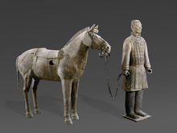

兵马俑，即秦始皇兵马俑，亦简称秦兵马俑或秦俑，第一批全国重点文物保护单位，第一批中国世界遗产，位于今陕西省西安市临潼区秦始皇陵以东1.5千米处的兵马俑坑内。 [1]
兵马俑是古代墓葬雕塑的一个类别。古代实行人殉，奴隶是奴隶主生前的附属品，奴隶主死后奴隶要作为殉葬品为奴隶主陪葬。兵马俑即制成兵马（战车、战马、士兵）形状的殉葬品 [2] 。
1961年3月4日，秦始皇陵被国务院公布为第一批全国重点文物保护单位 [3] 。1974年3月，兵马俑被发现。1987年，秦始皇陵及兵马俑坑被联合国教科文组织批准列入《世界遗产名录》，并被誉为“世界第八大奇迹” [4] ，先后有200多位外国元首和政府首脑参观访问，成为中国古代辉煌文明的一张金字名片，被誉为世界十大古墓稀世珍宝之一。 [5-7]